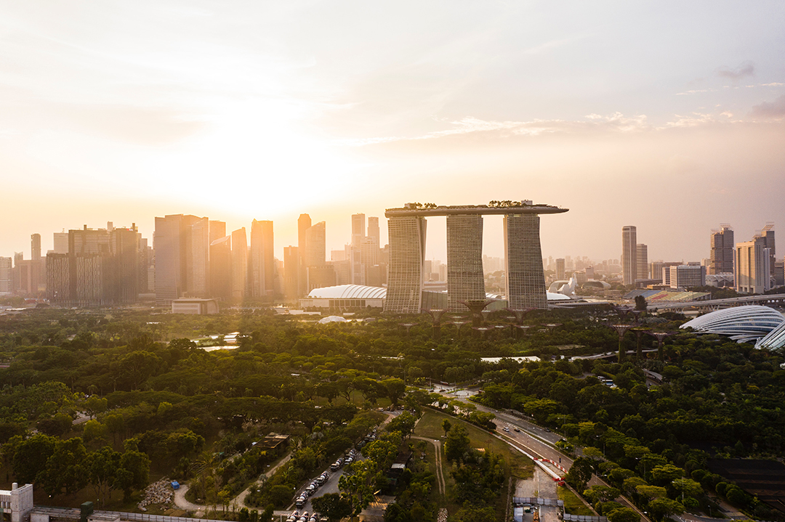
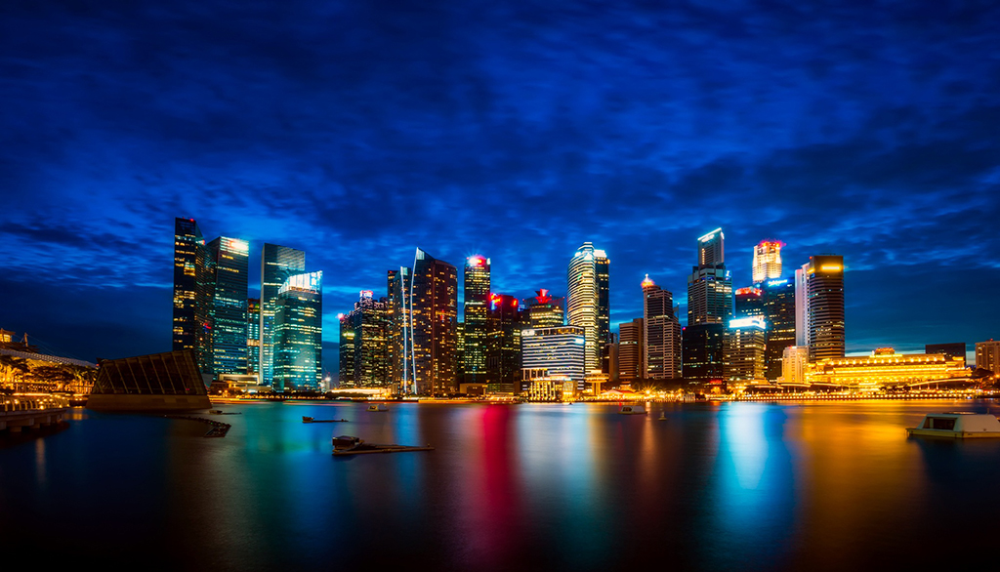

where first to visit

The city-state lies on the main island and encompasses additional fifty smaller neighbouring islands. The city of Singapore differs from its neighbouring Asian metropolises mostly in cleanliness and tidiness. The airport in Singapore is an international hub, which means flight connections to this part of the world are excellent. More than fifty large ships arrive in the country’s port each day. Tourism is booming and communicating doesn’t pose any difficulties because English is an official language. English traditions, however, are noticeable elsewhere, for example, lining up in queues. Singapore is one of the wealthiest countries in the world and it also intends to remain as such, including through its strict laws. One of these laws imposed a ban on chewing gum sales. Travellers are particularly advised against littering while exploring the country because it can result in fines and street cleaning punishment. Singapore is the country’s capital and its only city. It’s a large business and shopping centre. But don’t get too excited, there’s not much sympathy for consumers who are cautious with their money. But you can have a go at haggling even in the most modern of shopping centres. There are massive sales in June and July. Public transport is perfectly organised, though you should still think twice before taking out that sandwich on a metro. Before entering the city centre, you can get into one of the numerous cars that are waiting for travellers, as they can’t drive off without them, but you should still tour the city on foot and experience the world of views, sounds and smells.
The island’s interior is almost completely built up with very few remnants of swamps and tropical forests, which used to cover the whole island up until the 19th century when there was a sharp economic upturn that lead to one of the most developed countries of the contemporary era. Despite this, the inhabitants still try to preserve their own culture, which allows travellers to experience interesting cultural mixes in a small area. Give in to the smells of Little India or explore Chinatown where you’ll meet rickshaws with loudspeakers and traditional Chinese market stalls and shops. Take a guide tour in Little India that includes a stop in traditional shops and where you’ll learn a lot of fascinating stories and entertaining anecdotes. What all parts of the city have in common is the food. Tips for cheap and good eat-outs will take you to simple restaurants, some kind of food meccas. Singapore has a rich colonial past, a piece of which can be found at the interesting Raffles Hotel, which had already become famous in former times. You can treat yourself to the delicious Singapore Sling cocktail and throw the peanut shells on the floor. What else is there to see in the city of five million? For starters, it’s best to climb up to the Marina Bay Sands terrace on the 57th floor where you can enjoy some spectacular views and an even greater sunset. The hotel itself is an engineering wonder. One of the greatest attractions includes Gardens by the Bay that consist of three parts – southern, eastern and central – and are home to more than half a million plants. The Flower Dome, the world’s largest greenhouse, is located in the southern part. The Cloud Forest area recreates conditions typical for altitudes between 1000 and 2000 metres in the tropical zone. There are also various tree-lined boulevards and tree structures resembling super trees in the complex.